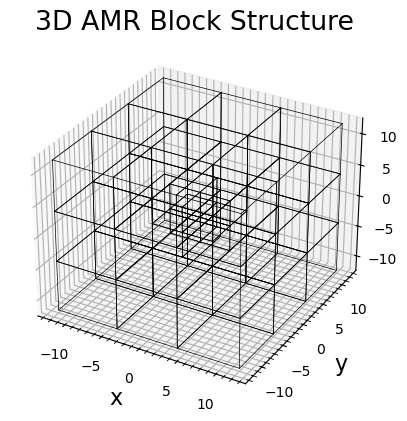
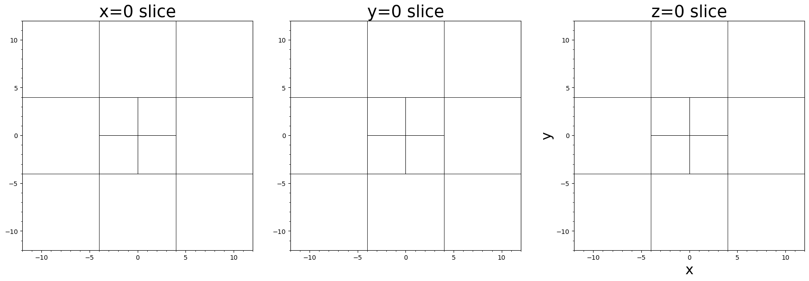

Systematic Mesh Plotting

This example demonstrates the systematic method for plotting various simulation mesh types in Batsrus.jl using PyPlot.
The plotgrid function provides a unified interface for visualizing the grid topology of different simulation outputs.
using Batsrus, PyPlot, LazyArtifacts
# Use the test data artifact
# Note: In a real scenario, this artifact is automatically managed by Pkg
datapath = artifact"testdata"
# 1. Structured 2D Mesh
# This demonstrates plotting grid lines for a standard curvilinear/uniform grid.
file_structured = joinpath(datapath, "z=0_raw_1_t25.60000_n00000258.out")
bd_structured = load(file_structured)
fig1 = plt.figure(figsize=(10, 8))
ax1 = fig1.add_subplot(111)
plotgrid(bd_structured, ax1)
ax1.set_title("Structured 2D Grid")
ax1.set_xlim(-20, 20)
ax1.set_ylim(-3, 3)
2. Unstructured Grid
file_unstructured = joinpath(datapath, "bx0_mhd_6_t00000100_n00000352.out")
bd_unstructured = load(file_unstructured)
fig2 = plt.figure(figsize=(10, 8))
ax2 = fig2.add_subplot(111)
plotgrid(bd_unstructured, ax2)
ax2.set_title("Unstructured Grid")
3. Block AMR Mesh (Batl)
This demonstrates visualizing the leaf blocks of an Adaptive Mesh Refinement grid.
filetag = joinpath(datapath, "3d_mhd_amr/3d__mhd_1_t00000000_n00000000")
batl = Batl(readhead(filetag * ".info"), readtree(filetag)...)
# 3D view
fig3 = plt.figure(figsize=(10, 8))
plotgrid(batl)
plt.title("3D AMR Block Structure")
# Slices in three normal directions
fig4, axes = plt.subplots(1, 3, figsize=(18, 6), constrained_layout=true)
plotgrid(batl, axes[1], dir="x", at=0.0)
axes[1].set_title("x=0 slice")
plotgrid(batl, axes[2], dir="y", at=0.0)
axes[2].set_title("y=0 slice")
plotgrid(batl, axes[3], dir="z", at=0.0)
axes[3].set_title("z=0 slice")

This page was generated using DemoCards.jl.